Help › Samsung greyscale setup
Set up true greyscale on Samsung
On Samsung devices, Telos turns your screen grey using Android's own Colour correction setting. Setting it up takes a few minutes and three changes in Settings. You only do it once.
Using a phone that isn't Samsung? You don't need this guide. Telos uses Do Not Disturb access on other phones and asks for it during setup.
What you'll do
- Turn on Telos in Accessibility settings.
- Set Colour correction to Greyscale.
- Add the Colour correction shortcut.
- Go back to Telos and finish.
Telos marks each one as done when you finish it, so you can always see what's left. Your screens may look a little different from the screenshots, depending on your device. Follow the menu names.
Why Telos needs this
During a session, Telos switches Colour correction to greyscale, and back to colour when the session ends. To do that, it needs its Accessibility service turned on. The service only presses Android's own Colour correction shortcut. It can't read what's on your screen, can't see which apps you open and doesn't collect personal information.
Step 1: Turn on Telos in Accessibility settings
-
In Telos, on the greyscale setup screen, tap Allow next to Accessibility access.
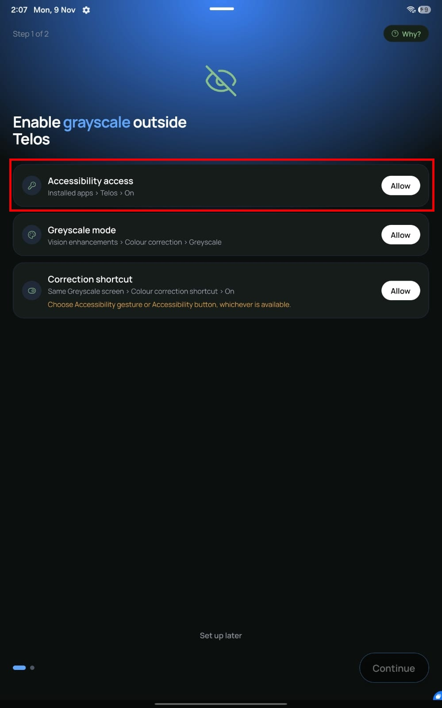
The Accessibility access card in Telos. -
Telos explains why it needs Accessibility. Read it, then tap Continue. Settings opens.
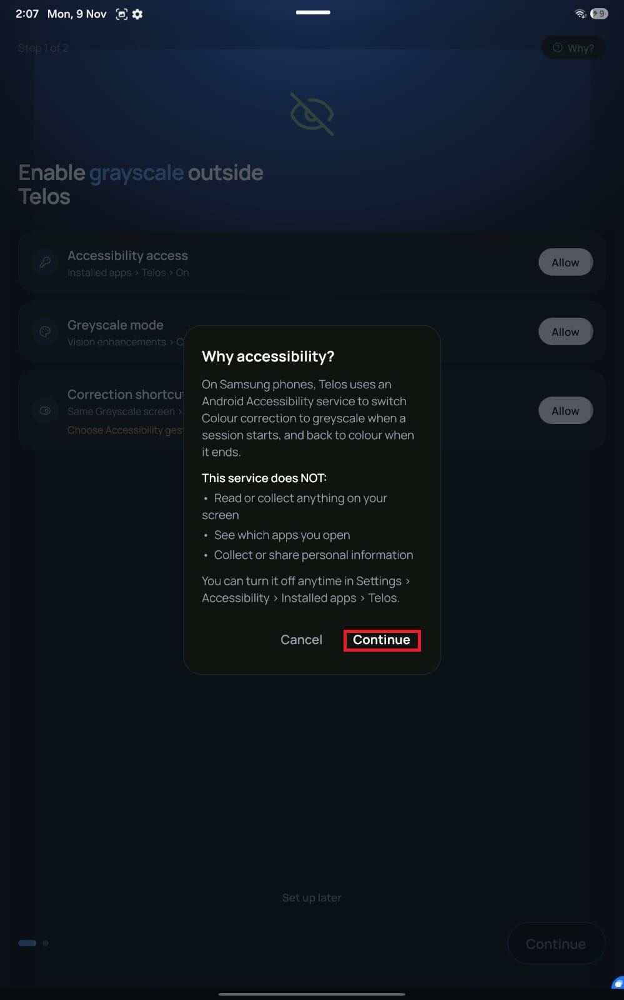
Telos's explanation. Tap Continue to open Settings. -
On the Accessibility screen, tap Installed apps.
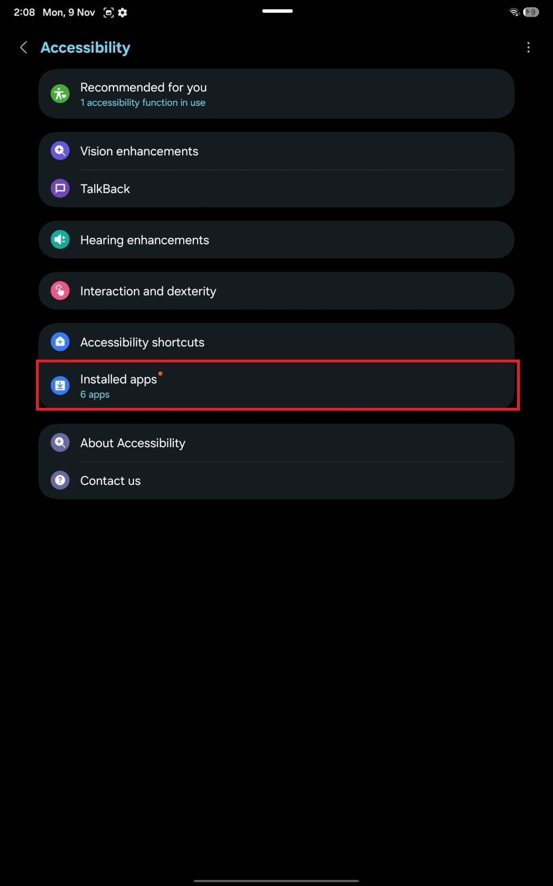
Settings › Accessibility › Installed apps. -
Tap Telos. It shows Off for now.
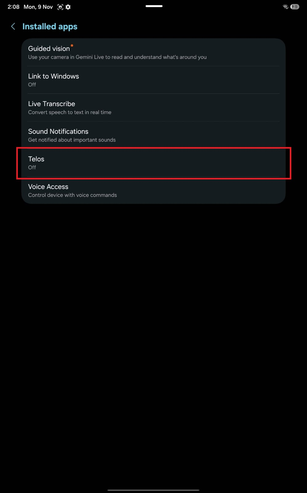
Telos is listed under Installed apps. -
Turn the switch at the top On. Android asks “Allow Telos to have full control of your device?” Tap Allow.
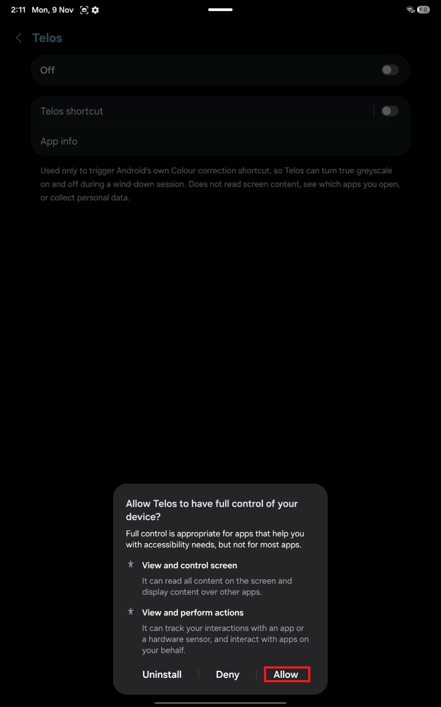
Android's standard Accessibility prompt. This wording is the same for every Accessibility service. Telos's service is set up so that it can't read your screen content and is sent no screen events. See our Privacy Policy for what Telos collects.
-
Go back to Telos (swipe back, or open Telos from your recent apps). The Accessibility access card now shows Granted.


If Android blocks the switch (“Restricted setting”)
On Android 13 and later, Android can block Accessibility for an app until you allow “restricted settings”. This mainly affects apps that were not installed from the Play Store. If the Telos switch is greyed out, or a “Restricted setting” message appears, do this:
- Open Settings › Apps and tap Telos. If you can't find it, tap See all apps.
- Tap the More menu (⋮) at the top right.
- Tap Allow restricted settings and follow the prompts.
- Go back to Settings › Accessibility › Installed apps › Telos and turn it on.
If there is no Allow restricted settings option, you don't need it. Google describes this setting in Learn about restricted settings.
Step 2: Set Colour correction to Greyscale
In Telos, tap Allow on the Greyscale mode card. Accessibility settings opens. From there:
-
On the Accessibility screen, tap Vision enhancements.
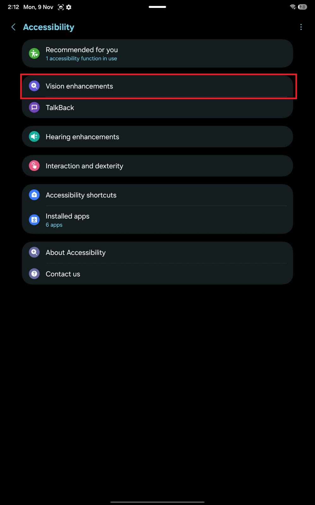
Settings › Accessibility › Vision enhancements. -
Under Colours and clarity, tap Colour correction.
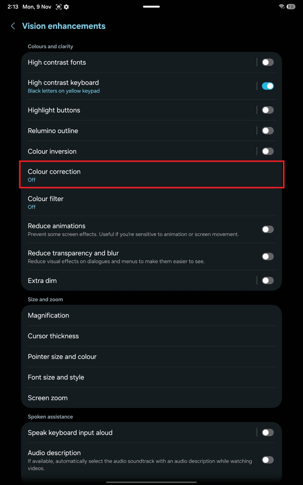
Colour correction is in the Colours and clarity section. -
In the list of modes, choose Greyscale.
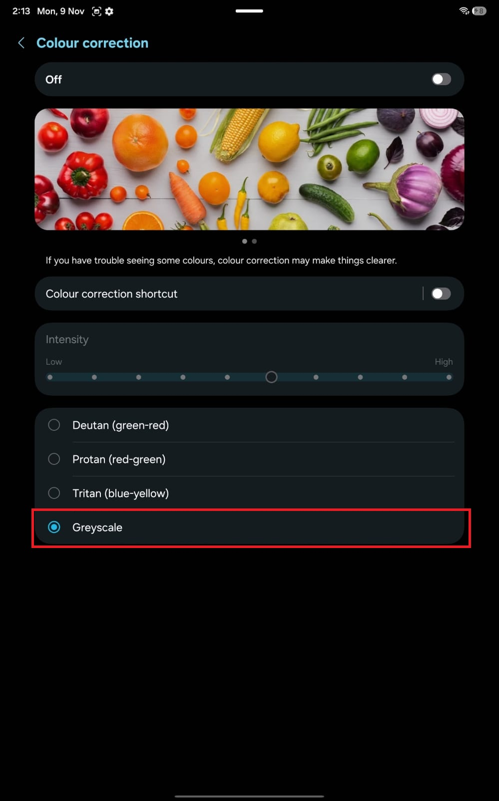
Greyscale selected on the Colour correction screen. You don't need to turn on the Off switch at the top of this screen. Telos turns Colour correction on during a session and off again afterwards.


Go back to Telos. Its Greyscale mode card shows Granted once the mode is set.
Already using Colour correction for colour blindness? If Colour correction is on with a different mode, Telos treats it as an accessibility accommodation you rely on. It will not change it and will not ask you to. In that case Telos tells you this and skips true greyscale.
Step 3: Add the Colour correction shortcut
Telos starts and stops greyscale by using the Colour correction shortcut, so that shortcut has to be set up.
-
Go back to the Colour correction screen from step 2. Tap the words Colour correction shortcut, not the switch beside them.
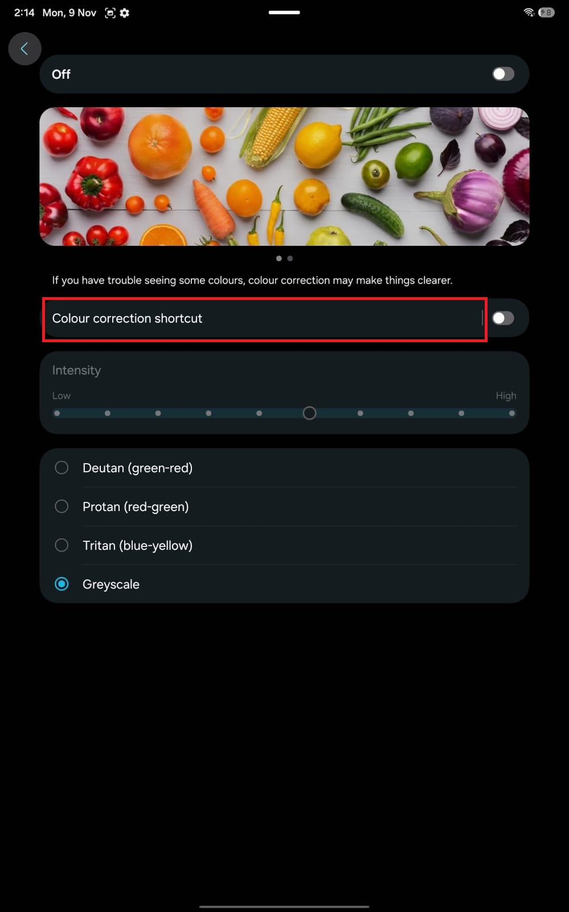
Tap the name of the Colour correction shortcut row. -
Turn the switch at the top On.
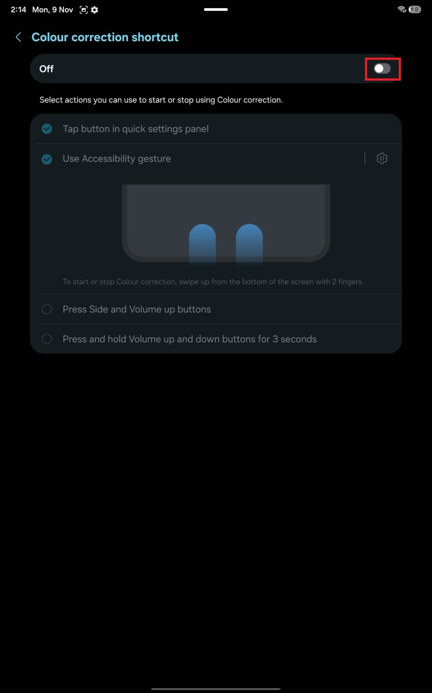
The switch at the top of the Colour correction shortcut screen. -
Make sure Use Accessibility gesture is ticked. Then tap the gear (⚙) next to it.
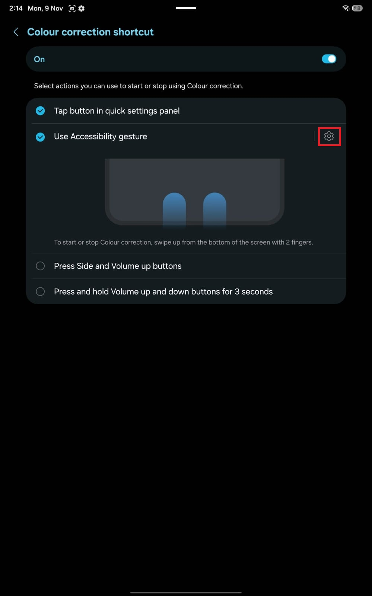
The gear next to Use Accessibility gesture opens its settings. -
Under Location, choose Swipe up with 2 fingers from bottom of screen. Select actions at the top should say Colour correction.
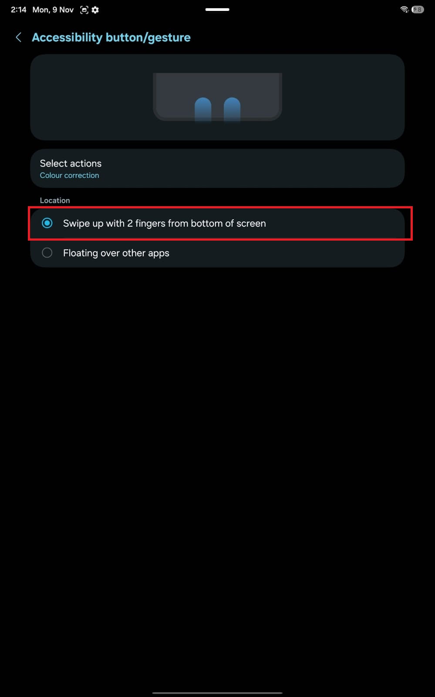
Choose the two-finger swipe from the bottom of the screen. -
Go back. On the Colour correction shortcut screen, Use Accessibility gesture should be ticked. Samsung may also tick Tap button in quick settings panel, and that is fine to leave.
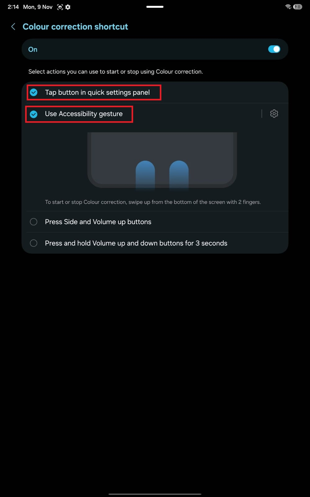
The finished shortcut screen.


Use the two-finger swipe. The other shortcut options, such as the quick settings panel button, don't work with Telos on their own.
Step 4: Go back to Telos and finish
Return to Telos. It checks your Settings again each time you open it, so all three cards should now read Granted.
- During first-time setup: tap Continue. This turns on true greyscale.
- Later, from Settings: in Telos, open Settings › Permissions › True greyscale. Once the last step is done, Telos turns true greyscale on by itself and shows “True greyscale is on for this app.” If it still says “Not enabled yet”, tap Use true greyscale.
To check it works, start a session and leave Telos. Your screen should turn grey outside Telos, and Telos itself stays in colour. When the session ends, colour returns.
To turn it off later, open the same screen in Telos and tap Turn off true greyscale.
Troubleshooting
Telos isn't in the Installed apps list, or its switch is greyed out
Android may be blocking it as a restricted setting. See If Android blocks the switch above.
A card in Telos still shows Allow after I did the step
Make sure you finished the step in Settings, then return to Telos and wait a moment. Telos re-reads your Settings every second while it is open. Check these three:
- Accessibility access: Telos is On under Installed apps.
- Greyscale mode: Greyscale is the selected mode on the Colour correction screen.
- Correction shortcut: Use Accessibility gesture is ticked, with Swipe up with 2 fingers from bottom of screen selected, and Colour correction is the only feature assigned to it.
Telos says “Screen dimming is stuck”
Something, often a force-stop, turned off Telos's Accessibility permission, and Telos can't turn it back on for you. Open Settings › Accessibility › Installed apps › Telos and turn it on again, as in step 1.
My screen stays grey after closing or force-stopping Telos
If Telos is force-stopped while true greyscale is on, the screen can stay grey until you turn Colour correction off yourself, and Telos can't undo that. Swipe up from the bottom of the screen with two fingers to switch it off, or open Settings › Accessibility › Vision enhancements › Colour correction and turn it off there. This trade-off is why true greyscale is optional.
Greyscale turns on by itself when no session is running
The shortcut you set up is a two-finger swipe up from the bottom of the screen, which is easy to do by accident. If Telos sees greyscale on with no session running, it switches it back off. If this keeps happening, let us know.
I can't find “Use Accessibility gesture” in step 3
Samsung names this option differently depending on how your device is navigated. If you use 3-button navigation, look for Accessibility button instead and choose that. If you still can't find a matching option, email us with your device model.
Telos says Colour correction is already on with a different mode
That is by design. Telos does not touch a Colour correction mode you may rely on, so true greyscale is not offered while it is set to something other than Greyscale.
I want to remove the setup
Turn off Settings › Accessibility › Installed apps › Telos, and set Colour correction back to how you like it. Telos goes back to its normal behaviour and offers true greyscale setup again when you open Settings › Permissions › True greyscale.
Still stuck? Email telosapp3@gmail.com with your device model and which step isn't working.